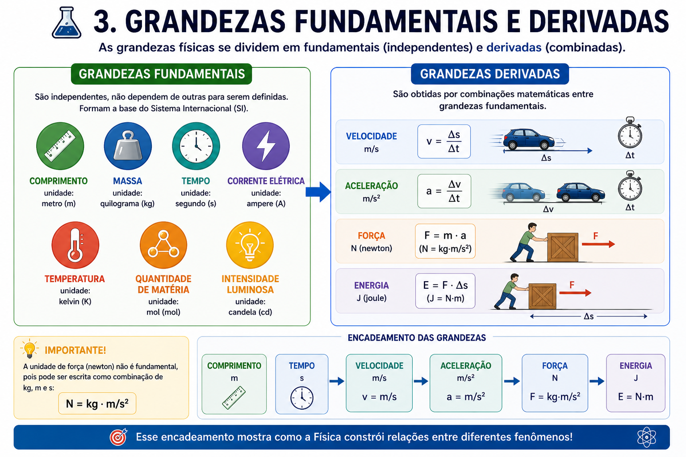
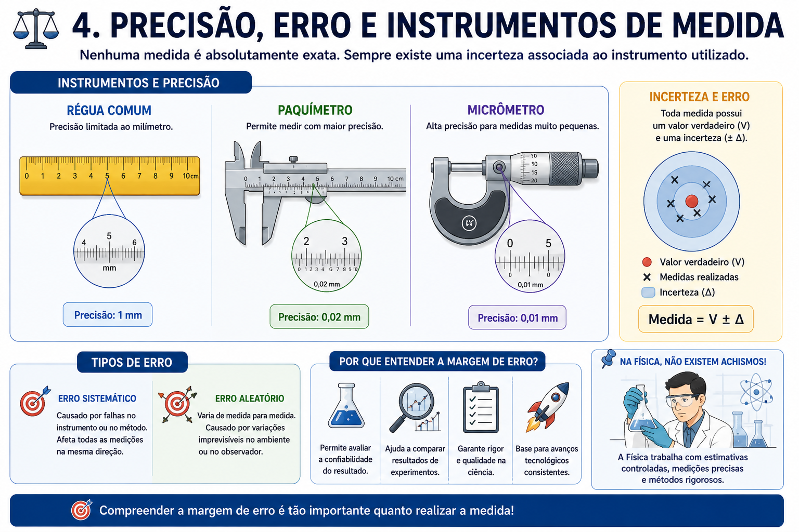
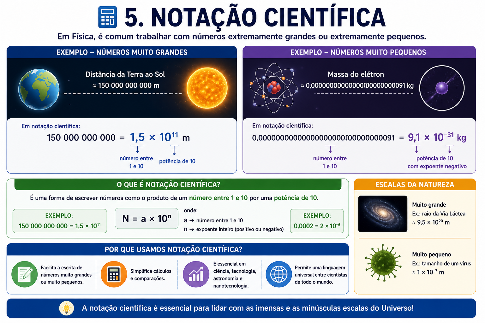

1º Ano do Ensino Médio • Física • Professor: Arlisson Ferreira



1. Uma grandeza física é:
2. A unidade de comprimento no SI é:
3. O segundo (s) é unidade de:
4. A velocidade é considerada uma grandeza:
5. A unidade da força no SI é:
6. 5 × 10² corresponde a:
7. Qual das alternativas apresenta uma grandeza fundamental?
8. A unidade padrão de massa no SI é:
9. A força é classificada como grandeza:
10. 3 000 000 em notação científica é: